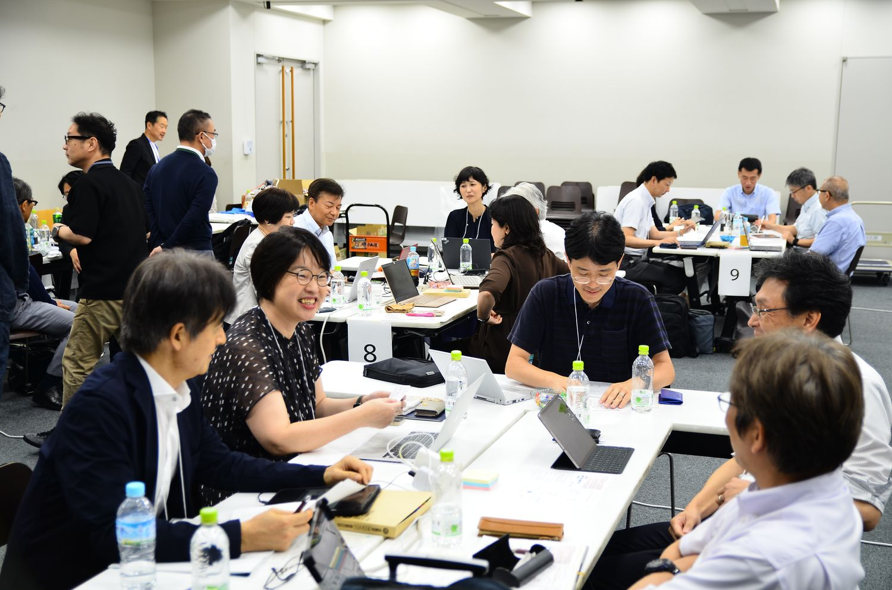
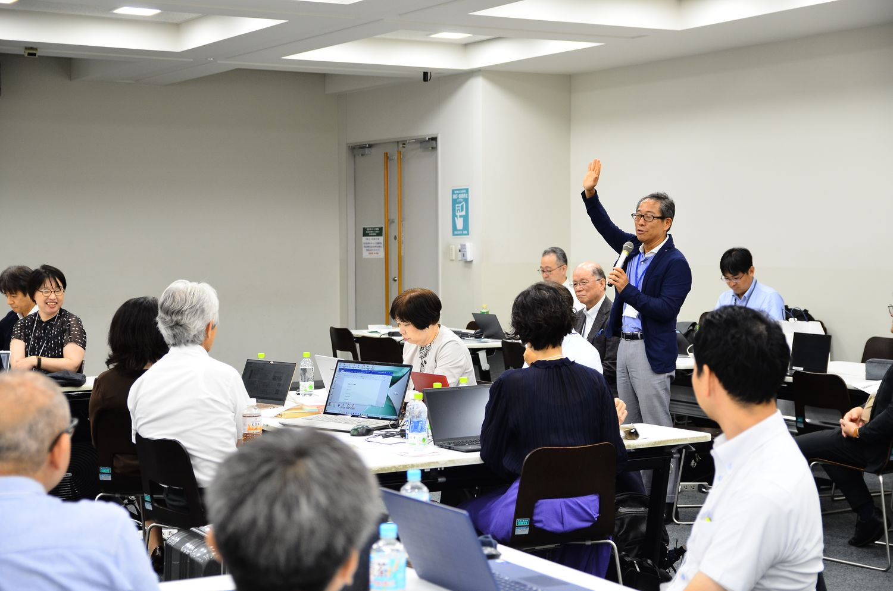
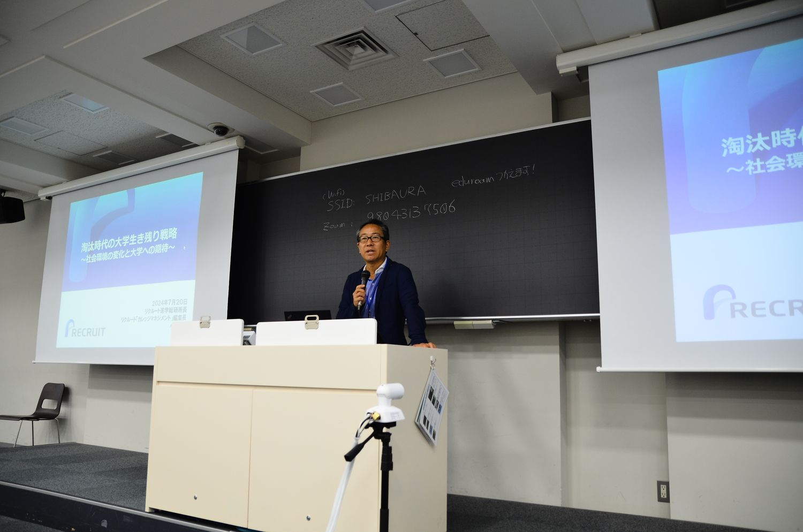
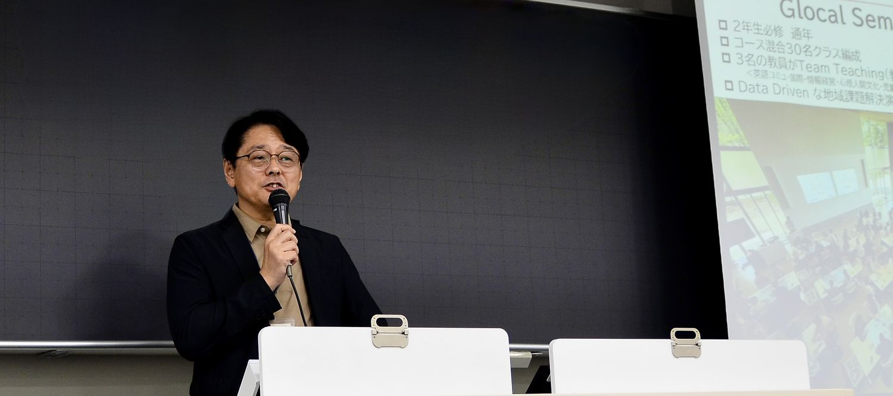
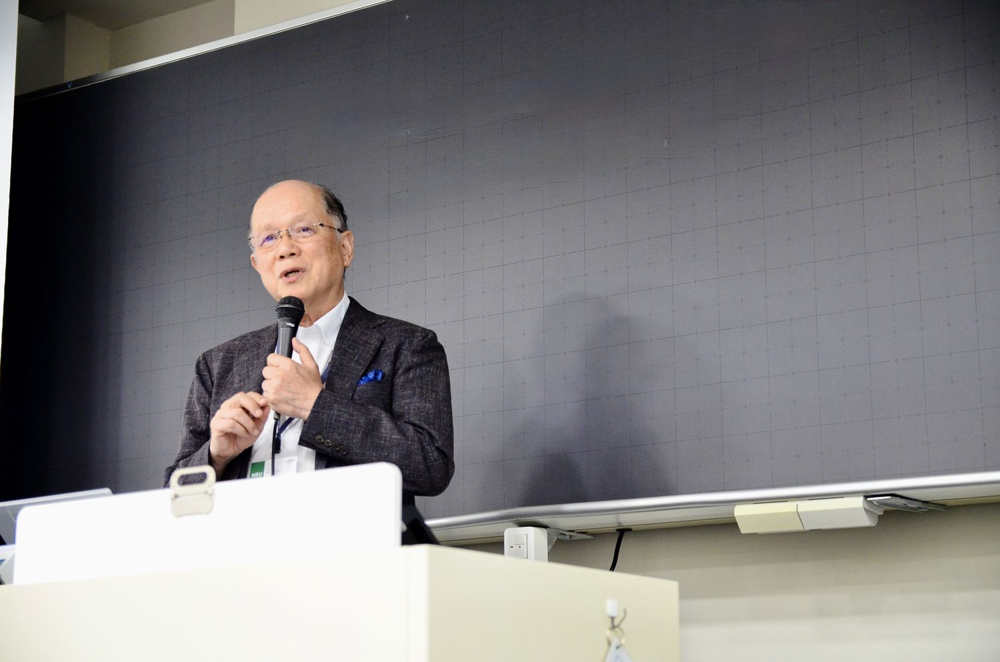
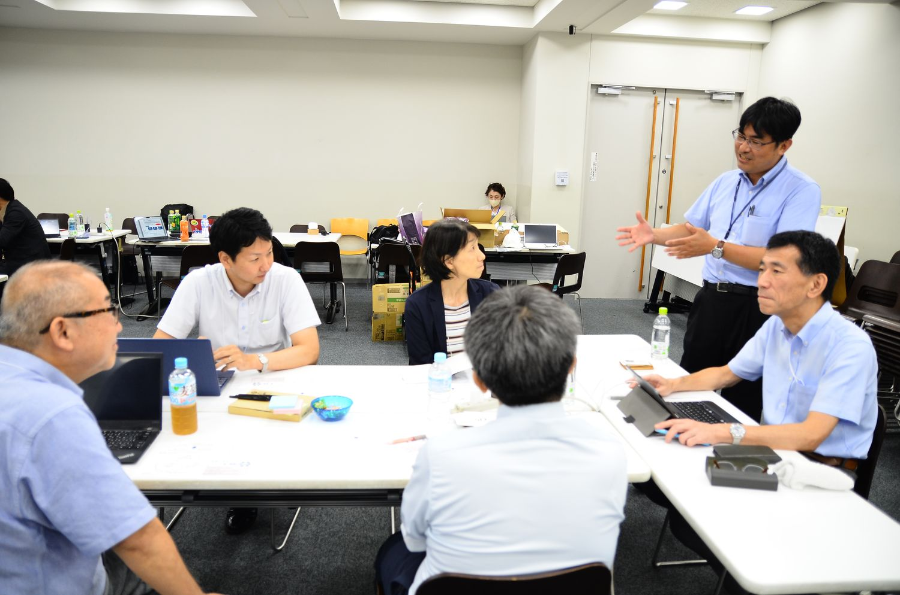

淘汰の時代における大学の生き残りと変革に向かうリーダーシップ
大学淘汰の時代が本格的に到来した現在、大学を取り巻く状況にはどのような問題や課題が存在するでしょうか。大学の生き残りと付加価値の高い教育をどう両立させていけばよいのかをテーマに基調講演・特別講演を行い、「今、大学が本当にやらなければならないこと」について議論しました。翌21日にはミドルリーダー研修を実施しました。



開催概要
| 日時 | 2024年7月20日（土） 14:00〜17:00 |
|---|---|
| 会場 | 芝浦工業大学 豊洲キャンパス |
| 定員 | 60名 |
| 参加費 | 1,000円 |
| 主催 | 大学リーダーシップ研究会 |
| 共催 | 理工学教育共同利用拠点（芝浦工業大学 教育イノベーション推進センター） |
| 参加者 | 79名（一般参加68名／主催・事務局9名／登壇者2名。7月20日・21日の2日間通算） |
参加者数は、研究会が保有する第1〜9回の統合参加者データ（v13）にもとづく集計です。申込記録を基礎としているため、当日の実数とは若干の差がありえます。
登壇者とプログラム
- 基調講演小林 浩リクルート進学総研 所長・カレッジマネジメント編集長「淘汰時代の大学生き残り戦略〜社会環境の変化と大学への期待〜」
- 特別講演大森 昭生共愛学園前橋国際大学・短期大学部 学長「ビジョンを共有する組織文化の作り方？〜ちょっと痛みを伴うかも・・・」
- 特別講演橋本 堅次郎日本文理大学 学長「実務家出身教員から見た大学〜組織を整え、前に進む〜」
- グループ討議・Q&A成田 秀夫（進行）桐蔭横浜大学
開催報告
以下は、当日の発言録をもとに、各登壇者の発言の要旨をまとめたものです。引用部分は発言録からの抜粋です。
開会挨拶と趣旨説明
山本 啓一（北陸大学）／榊原 暢久（芝浦工業大学 教育イノベーション推進センター）
山本は、本研究会が大森学長・成田先生・吉村先生と山本の4名で始まり、この3年間は科研費の助成を受けて毎年公開研究会を開いてきたことを紹介しました。科研費の3年目にあたる今回は、当初、大学全体で教学マネジメントに取り組む方策をテーマにする予定でした。しかし、大学の淘汰が急速に進んでいることから、大学の生き残りと変革、そのためのリーダーシップをテーマに改めました。続いて共催の芝浦工業大学の榊原暢久先生が挨拶し、同大学が全国に14か所ある共同利用拠点のうち唯一の私立大学の拠点であること、ミドルマネジメントを含むリーダーシップ研修を拠点として重視し、昨年に続いて会場を提供したことを述べました。
時代は本当に切迫していて、大学の淘汰が急激に進んでいます。そこで、大学の生き残りと変革、そのために何をすべきか、変革するリーダーシップを考えるというテーマを設定しました。
山本 啓一
基調講演 小林 浩
リクルート進学総研 所長・カレッジマネジメント編集長「淘汰時代の大学生き残り戦略――社会環境の変化と大学への期待」

小林氏は、大学経営を左右する要因として、人口動態、産業構造・就業構造の変化、政策動向の三つを挙げました。昨年の出生数は72万人です。1990年ごろ約200万人いた18歳は約110万人に減って市場は半分ほどになり、一方で大学の数は1.6倍に増えました。それでも大学が存続できたのは、大学進学率が2倍以上に上がったからだと説明しました。リクルートワークス研究所の試算では、2040年に1100万人の労働力が不足します。今春の新卒採用で大卒の採用計画を達成できた企業は全体の4割、地方では2割ほどでした。18歳人口はこの5年ほど横ばいが続き、その後は再び減っていきます。小林氏は、この5年間が大学改革の勝負の期間になると述べました。
小林氏は、選ばれる大学になるには個性（バリュー）を明確にし、社会に浸透させることが必要だと述べました。中規模・中倍率の大学は、定員を増やすことも減らすこともできずに意思決定が止まる「スタック・イン・ザ・ミドル」に陥りやすい一方、規模が小さくても意思決定が早く、ミッション・ビジョン・バリューが明確な「小強大学」もあると紹介しました。理念に共感した学生が集まれば入学者の質とブランド力が高まり、逆の循環に入ると抜け出すのに10年ほどかかるといいます。あわせて、職員が当事者意識を持つかどうかで改革の成否が分かれること、通信制高校の生徒や社会人、留学生など「国内・18歳・対面」以外の学生を新規事業として迎えること、学生が学修成果を自分の言葉で語れるようリフレクションを重ねることを挙げました。
継続的な競争優位性を確立していく。1回学部改組したからこれで終わりではなくて、継続的に改革を推進していく必要があります。
小林 浩
何が重要かというと当事者意識です。他の誰かではなくて本学でどうするか、私がどうするか。職員力が大学改革の成否を決める時代になってきているとも思います。
小林 浩
特別講演 大森 昭生
共愛学園前橋国際大学・短期大学部 学長「ビジョンを共有する組織文化の作り方？ ちょっと痛みを伴うかも・・・」

大森学長は、群馬県では出生数が9000人台となり、いま1万7000人ほどいる18歳人口が18年後には半分になると述べ、その間に県内の大学の半分がなくなるだろうと指摘しました。生き残りという言い方ももう違うのかもしれず、自分の大学のためではなく地域の子どもたちのために、国公私を超えて高等教育へのアクセスを確保する段階に入っている可能性すらあると述べました。そのうえで、共愛学園前橋国際大学が今年度始めた2年生必修の「グローカルセミナー」を紹介しました。「地域の未来を私がつくる」というビジョンのもとでカリキュラムを改め、5つのコースの学生が混ざったクラスで地域課題に取り組みます。専門の異なる教員も全員がチームで授業を担当しています。
教職一体ガバナンスは、短期大学から4年制に転換した直後、入学定員の6割ほどしか学生が集まらなかった時期に生まれました。地元の学生が来ないのに全国から来るはずがないという教授の一言をきっかけに、大学は「地域の大学」というビジョンを据え直し、教員・職員から非常勤・パート・委託の職員まで全員が参加するスタッフ会議を始めました。最初の3年間は教員人事や学則もスタッフ会議で議論しました。定員割れのなかでも公募推薦の評定平均3.5の基準を変えずに不合格を出し続け、収入が減る分は、人件費が帰属収入の55%を超えたら超えた分を一律に削る人件費抑制規程をスタッフ会議で決めて備えました。教員と職員には3年任期のテニュアトラックを設けています。大森学長は、文化を変えるには時間がかかり、痛みも伴うと述べました。
もしかすると生き残りっていう表現自体ももう違うのかもしれなくて、何らかの形で地域の子供たちの高等教育へのアクセスを、自分の大学が生き残るためというよりも子供たちのために、国公私を超えて新しい学びのスキームを作っていくような段階に入ってる可能性すらある。
大森 昭生
痛くない方法もあったのかもしれませんが、我々はそれを見つけられなかった。でもあの時その文化を作ったことが今まで生きていて、だから生きてこれた、と思ってます。
大森 昭生
特別講演 橋本 堅次郎
日本文理大学 学長「実務家出身教員から見た大学――組織を整え、前に進む」

橋本学長は、百貨店、コンサルタント会社での組織調査、複数の企業の株式上場の仕事を経て、2011年に日本文理大学に着任しました。着任当初は依頼を断られることが続き、教員が研究室から出てこない「タコ壺」の組織だと感じたといいます。学部長になってからは、こうした組織をどう整えるかを考えてきました。その枠組みとして、目標（Goal）・役割（Role）・段取り（Procedure）・対人関係の質（Interpersonal）からなる「ELM・GRPI」を示し、参加者に自分の職場を〇×△で点検してもらいました。2023年4月開設の保健医療学部の設置申請では、提出の3日前に未完成の部分が見つかりました。橋本学長は管理者の責任だとして関係者に頼み、3日間で書類を仕上げたと振り返りました。
橋本学長は、線路を引くリーダーと、引いた線路を維持するマネージャーは放っておくと反発するが、本来は補完関係にあると述べました。設置申請では自らがリーダー役を務め、制度や規程に詳しい教員がマネージャー役を担いました。理念は出発点、希望は行き先であり、希望を示すのはリーダーの役目だといいます。保健医療学部の設置にあたっては県内の高校と病院をすべて回り、そこで寄せられた期待を学内に伝えました。コミュニケーションでは「訊く・聴く・伝える」の順に問いかけて相手を巻き込むこと、リーダーの立ち位置は「センター」「ウィズ」「アウト」を状況に応じて使い分けることを挙げました。最後に、組織の最終的なアウトプットは人材育成だと述べました。
淘汰の時代、要するに不連続な時には、いろんなトライアンドエラーをしていくっていうことが大事で、特に独自性と革新性ですね。反対は同質化です。同質化しないで自分のところの独自性と革新性を作っていく。
橋本 堅次郎
保健医療学部については、県下の高校と病院全部回りました。ものすごく支持を受けて、みんなが期待して待ってますと。だから、県下の病院、高校が期待してるものを我々は作るんですよっていう、そういったことを希望として言っていくということ。
橋本 堅次郎
グループ討議と質疑応答
進行：成田 秀夫（桐蔭横浜大学）

休憩をはさんでテーブルごとに討議した後、成田先生の進行で各グループからの報告と質問を受けました。職員が大学改革の成否を決める時代という指摘は本当に現実になっているのかという質問に対し、小林氏は、大学ごとに組織文化が異なり、教職協働が進む大学とそうでない大学の差が開いてきているように見えると答えました。橋本学長は、現場を歩いて自ら情報を取りに行くMBWA（Management By Wandering Around）を続けていると述べました。大森学長は、大学設置基準の改正により、教員と職員を区分せず、ともに教育研究を実施する組織として位置づける方向になったと説明しました。ミッションやビジョンを伝えるメッセージが現場の教員や高校生の共感を得にくいという報告には、小林氏が、上と下をつなぐミドル層の役割と、ビジョンを作る段階で学生の声を聞くことを挙げました。
全員参画と当事者意識をどう引き出すか、希望と危機感をどう伝え分けるかという報告もありました。橋本学長は、方向性は全員で共有したうえで、学長室のような実行の中核となる組織をつくり、反対する人に邪魔をさせないことが必要だと答えました。大森学長は、全員野球は幻想だと述べ、全員を説得するか、意欲のある人だけで進めるかの交渉コストを判断するのがリーダーだと答えました。ただし、カリキュラムの改革は全員で取り組む必要があり、2年の予定が4年かかったといいます。会場からは、大学の個性化が進むと外から比べにくくなるのではないかという質問もありました。小林氏は、偏差値以外の基準を大学自らが示すこと、大学ポートレートや全国学生調査を横並びで比較できるようにすることを挙げました。最後に、会場に参加していた文部科学省の担当課長が発言し、私立大学が社会に果たしている役割を発信してほしいと述べました。
カリキュラムの改革は交渉コストをかけてでも全員でやる部分です。恩恵を受けるのは学生なので、学生にとってここはコストをかけるべきか、やれるものだけでやっちゃった方がいいのかを判断をするのがリーダーなのかなって私は自分に言い聞かせてます。
大森 昭生
閉会挨拶
吉村 充功（日本文理大学 副学長）
吉村先生は、本研究会がこれまで教学マネジメントを中心に議論してきたことにふれ、教学マネジメントだけでは大学が生き残れない時代になり、組織を大きく変えることが必要だと考えて今回のテーマを設けたと説明しました。吉村先生自身、20年在籍する日本文理大学で、大学のビジョンを上にも下にも伝えて関係者を巻き込んできたといいます。そのうえで、ミドルや現場の教職員も、信念を持って周りを巻き込めばトップを変えていけると述べました。最後に、学外に仲間をつくることは学内で折れないことにもつながると述べ、参加者どうしのネットワークづくりを呼びかけました。
決してミドルや現場の方が組織を変えられないわけではないので、信念を持って周りを巻き込んでトップを変えていく。
吉村 充功
参加者アンケートから
危機感の共有と、トップだけでなくミドルから動くことへの言及が中心です。一方で、トップが替わらなければ組織文化は変わらないのではないかという受け止めも記されています。
| 研究会全体の満足度 | 4.79 | |
|---|---|---|
| 基調講演 小林 浩 氏 | 4.68 | |
| 特別講演 大森 昭生 | 4.79 | |
| 特別講演2 橋本 堅次郎 | 4.74 | |
| グループ討議 | 4.33 | |
| 質疑応答 | 4.38 | |
| 仕事との関連性・有用性 | 4.54 |
- リーダーの立場からも、試行錯誤して取り組まれていることを実感でき、課員だから何も動かせないと諦める必要はないと感じた。（大学職員）
- 少人数且つ短期間で実行すべきことと、時間をかけても全体の合意を得て進めることを見分け、改革を進めることが肝心。（大学職員・事務部長）
- 改革が進んでいる大学ではトップの先生方がミドル以下との対話を大事にしていると感じました。（大学職員）
参加者アンケートの回答は39件（回答率49.4%）です。満足度は5段階で、数値が大きいほど高い評価を示します。
資料
- 配布資料参加者向けに共有しています（掲載準備中）
- 発言録参加者向けに共有しています（掲載準備中）
- アンケート結果参加者向けに共有しています（掲載準備中）
本研究会はJSPS科研費 基盤研究(C)「教学マネジメントにおける学部長等のミドルリーダーシップ研究」（研究代表者：山本啓一）の助成を受けて開催しました。